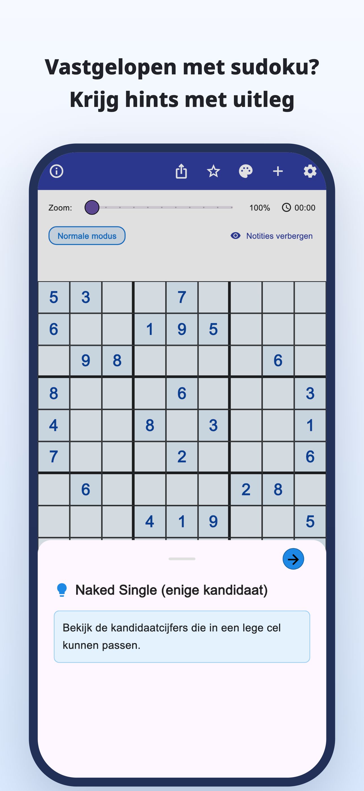
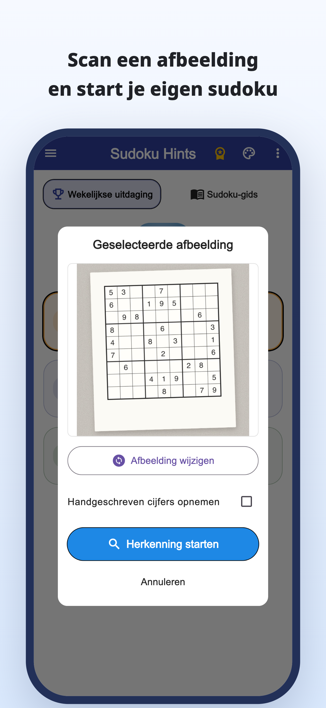
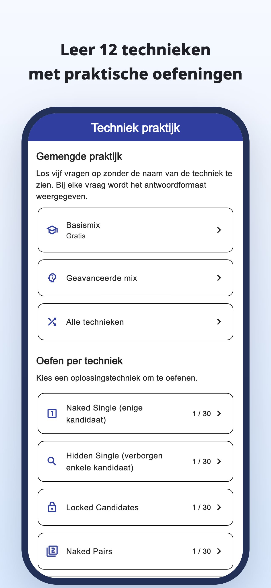
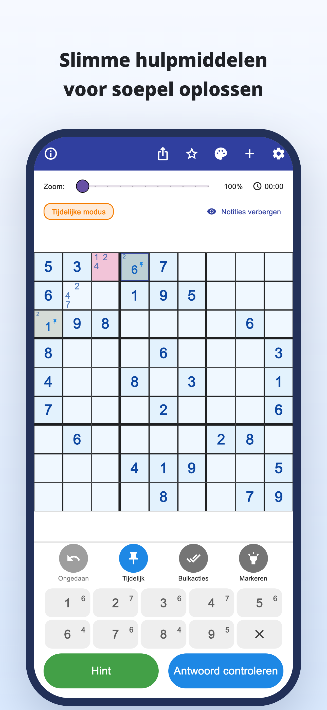
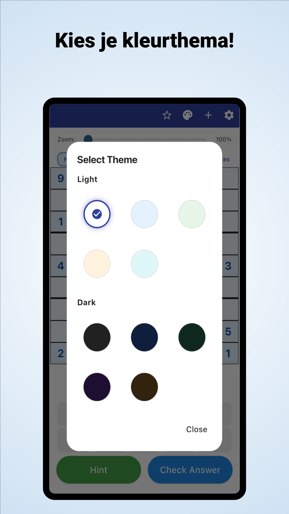

“Waar moet ik nu kijken?”
Je controleert het rooster steeds opnieuw,
maar blijft op hetzelfde punt steken.
Scannen met de camera · Hints met uitleg
Scan puzzels uit kranten en tijdschriften.
Begrijp waarom een cijfer past en puzzel daarna zelf verder.
iPhone en Android / Gratis downloaden · In-appaankopen





Herken je dit tijdens het puzzelen?
Je controleert het rooster steeds opnieuw,
maar blijft op hetzelfde punt steken.
Waarom hoort dat cijfer daar?
De oplossing overschrijven is niet genoeg.
Je wilt de papieren sudoku waaraan je werkt
gewoon in de app voortzetten.
Maak van een struikelblok een aanwijzing
Lees een sudoku uit een krant of tijdschrift in via een foto en typ minder cijfers met de hand.
Een afbeelding inlezenLees de redenering achter een zet en gebruik die voor je volgende stap, in plaats van alleen het antwoord in te vullen.
Hints met uitlegBekijk uitleg en oefeningen per techniek en oefen om ze zelf te herkennen.
Technieken oefenenVoor wie graag zelf de oplossing vindt
Importeer je eigen puzzel en ga verder waar je gebleven was.
Begrijp het lastige punt en puzzel daarna zelf verder.
Voor beginners en iedereen die een volgende techniek wil leren.
Lezen · Proberen · Oefenen
Begin in je browser.
Lees een handleiding of speel een volledige puzzel.
Van kandidaatnotities tot uitleg en oefeningen per techniek.
Probeer een hele puzzel met hints wanneer je die nodig hebt.
Ontdek de regels en het plezier van samenhangende aanwijzingen.
Kijk naar de blauw omrande cel en open de hint.
Hint voor de volgende zet
Bekijk de kandidaten van een leeg vakje.
Dit webvoorbeeld laat je één zet proberen. De weergave in de app is anders.
Als je vastloopt met sudoku.
Download Sudoku Hints
Gratis downloaden · In-appaankopen
Downloaden en uitproberen is gratis. Hints, antwoordcontroles en afbeeldingsscans hebben gebruikslimieten; soms moet je een videoadvertentie bekijken.
Premium is een maand- of jaarabonnement. Het verwijdert advertenties en biedt onbeperkte hints en antwoordcontroles. Ook met Premium geldt een limiet voor afbeeldingsscans. Prijzen en voorwaarden staan in de app.
Importeer een foto van je sudoku. Controleer de herkende cijfers en verbeter fouten voordat je begint. Klassieke 9×9-sudoku’s worden ondersteund.
Je kunt ingebouwde puzzels spelen en uitleg en oefeningen per techniek gebruiken. Sommige puzzels en oefeningen vereisen Premium.
Naast deze demo van één zet kun je een volledige puzzel in je browser spelen en handleidingen en oefeningen bekijken.
Sudoku-uitleg